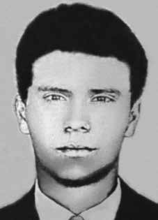

Paulo
Torres
Gonçalves
CIRCUNSTÂNCIAS DA MORTE
Paulo Torres Gonçalves desapareceu após sair de sua casa para ir ao colégio no dia 26 de março de 1969. Ao perceberem o desaparecimento de Paulo, seus pais foram à sua procura em delegacias, hospitais e ao Instituto Médico Legal (IML) do Rio de Janeiro, sem obter informação alguma.
Cerca de um mês após o desaparecimento, eles receberam a informação, por meio de um vizinho, sargento da Aeronáutica, de que o seu filho teria sido preso pela Delegacia de Ordem Política e Social do Estado da Guanabara (DOPS/GB), em seguida, teria sido levado para a Marinha e, por último, teria sido libertado. Apesar de buscarem confirmar esses indícios, não conseguiram descobrir o paradeiro de seu filho.
De acordo com o relato de seus pais, pouco após o desaparecimento de Paulo, eles teriam começado a ser seguidos por pessoas desconhecidas, chegando mesmo a desconfiar de que o seu telefone teria sido grampeado. A fim de obter informações para a sua identificação, os pais de Paulo Torres Gonçalves procuraram o diretor do Instituto de Identificação Félix Pacheco e solicitaram sua ficha datiloscópica, mas não a obtiveram.
O Grupo Tortura Nunca Mais do Rio do Rio de Janeiro localizou, no Arquivo Público do Estado do Rio de Janeiro, no acervo do extinto DOPS, documento do Centro de Informações do Exército (CIE), datado de 14 de outubro de 1969, Pedido de Busca 743/69, consta a informação de que Paulo teria sido preso pelo DOPS, encaminhado posteriormente à Marinha e que, por motivos ignorados, estaria recolhido ao Presídio Tiradentes ou ao Presídio Novo, em São Paulo.
Nesse documento, consta ainda a informação de que Paulo Torres Gonçalves teria sido preso por motivos relacionados à “subversão”. Pesquisas da CNV em fichas datiloscópicas, assim como em outros documentos relacionados a pessoas sepultadas como indigentes, realizados no Instituto de Identificação Félix Pacheco e no IML do Rio de Janeiro, propiciaram a realização de Laudo de Perícia Necropapiloscópica, assinado pelo papiloscopista Reinaldo José de Oliveira Tavares, em 3 de dezembro de 2014, que identificou as digitais de Paulo Roberto Torres Gonçalves como sendo as digitais de um homem sepultado como indigente no cemitério da Cacuia, na Ilha do Governador, em 16 de abril de 1969.
As digitais de Paulo Torres Gonçalves correspondem àquelas de um que jovem dera entrada no IML com guia número 62 da 17ª DP em 28 de março de 1969. Em 29 de março de 1969, foi lavrado laudo de necropsia, assinado à época pelo médico Higino de Carvalho Hércules e outro legista parcialmente identificado. Este laudo registra a morte de um homem pardo, de aproximadamente 20 anos e com 168 cm de altura, morto por afogamento.
A hipótese sustentada pela CNV é de que no momento da realização da necropsia, houve troca de cadáveres, possivelmente proposital, e o corpo examinado fora o de outro homem. No momento do fechamento de seu Relatório, a CNV prossegue nas investigações sobre morte e desaparecimento de Paulo Torres Gonçalves, com pesquisa nos livros da Cacuia e a análise de toda a documentação levantada.
O objetivo é localizar onde seu corpo foi enterrado e, com essa informação, proceder à exumação, identificar cientificamente seus restos mortais, e apontar os responsáveis por sua morte e desaparecimento.
Paulo Torres Gonçalves disappeared after leaving his home to go to school on March 26, 1969. Upon realizing Paulo's disappearance, his parents went looking for him at police stations, hospitals and the Legal Medical Institute (IML) in Rio de Janeiro, without obtaining any information.
About a month after his disappearance, they received information, through a neighbor, an Air Force sergeant, that their son had been arrested by the Police Station for Political and Social Order of the State of Guanabara (DOPS/GB), then taken to the Navy and, finally, released. Despite trying to confirm these signs, they were unable to discover the whereabouts of their son.
According to his parents' report, shortly after Paulo's disappearance, they began to be followed by unknown people, and even suspected that their phone had been tapped. In order to obtain information for his identification, Paulo Torres Gonçalves' parents sought out the director of the Félix Pacheco Identification Institute and requested his fingerprint form, but were unable to obtain it.
The Tortura Nunca Mais Group of Rio de Janeiro located, in the Public Archive of the State of Rio de Janeiro, in the collection of the extinct DOPS, a document from the Army Information Center (CIE), dated October 14, 1969, Search Request 743/69, containing information that Paulo had been arrested by the DOPS, later sent to the Navy and that, for unknown reasons, he was detained in the Tiradentes Prison or the Novo Presidio, in São Paulo.
This document also contains information that Paulo Torres Gonçalves had been arrested for reasons related to “subversion”. CNV research on fingerprint records, as well as other documents related to people buried as indigents, carried out at the Félix Pacheco Identification Institute and at the IML of Rio de Janeiro, led to the creation of a Necropapiloscopy Expertise Report, signed by papilloscopist Reinaldo José de Oliveira Tavares, on December 3, 2014, which identified the fingerprints of Paulo Roberto Torres Gonçalves as being the fingerprints of a man buried as a pauper in the Cacuia cemetery, on Ilha do Governador, on April 16, 1969.
Paulo Torres Gonçalves' fingerprints correspond to those of a young man who had entered the IML with guide number 62 from the 17th DP on March 28, 1969. On March 29, 1969, an autopsy report was drawn up, signed at the time by doctor Higino de Carvalho Hércules and another partially identified coroner. This report records the death of a brown man, approximately 20 years old and 168 cm tall, killed by drowning.
The hypothesis supported by the CNV is that at the time of the autopsy, there was an exchange of corpses, possibly on purpose, and the body examined was that of another man. At the time of closing its Report, the CNV continues its investigations into the death and disappearance of Paulo Torres Gonçalves, with research in Cacuia's books and the analysis of all the documentation collected.
The objective is to locate where his body was buried and, with this information, proceed with the exhumation, scientifically identify his remains, and identify those responsible for his death and disappearance.
Paulo Torres Gonçalves desapareció después de salir de su casa para ir a la escuela el 26 de marzo de 1969. Al darse cuenta de la desaparición de Paulo, sus padres fueron a buscarlo a comisarías, hospitales y al Instituto Médico Legal (IML) de Río de Janeiro, sin obtener ninguna información.
Aproximadamente un mes después de su desaparición, recibieron información, a través de un vecino, sargento de la Fuerza Aérea, de que su hijo había sido detenido por la Comisaría de Orden Político y Social del Estado de Guanabara (DOPS/GB), luego llevado a la Marina y, finalmente, liberado. A pesar de intentar confirmar estos indicios, no pudieron descubrir el paradero de su hijo.
Según el relato de sus padres, poco después de la desaparición de Paulo, comenzaron a ser seguidos por desconocidos, e incluso sospecharon que su teléfono había sido intervenido. Para obtener información para su identificación, los padres de Paulo Torres Gonçalves buscaron al director del Instituto de Identificación Félix Pacheco y le solicitaron su ficha dactiloscópica, pero no pudieron obtenerla.
El Grupo Tortura Nunca Mais de Río de Janeiro localizó, en el Archivo Público del Estado de Río de Janeiro, en el acervo del extinto DOPS, un documento del Centro de Información del Ejército (CIE), de fecha 14 de octubre de 1969, Solicitud de Búsqueda 743/69, que contenía información de que Paulo había sido arrestado por el DOPS, luego enviado a la Marina y que, por razones desconocidas, estaba detenido en la Cárcel de Tiradentes o en el Novo Presidio, en São Paulo.
Este documento también contiene información de que Paulo Torres Gonçalves había sido detenido por motivos relacionados con la “subversión”. La investigación del CNV sobre registros dactiloscópicos, así como otros documentos relacionados con personas enterradas como indigentes, realizada en el Instituto de Identificación Félix Pacheco y en el IML de Río de Janeiro, condujo a la elaboración de un Informe de Peritaje en Necropapiloscopia, firmado por el papiloscopista Reinaldo José de Oliveira Tavares, el 3 de diciembre de 2014, que identificó las huellas dactilares de Paulo Roberto Torres Gonçalves como huellas de un hombre enterrado como indigente en el cementerio de Cacuia, en Ilha do Governador, el 16 de abril de 1969.
Las huellas dactilares de Paulo Torres Gonçalves corresponden a las de un joven que había ingresado al IML con el número de guía 62 de la 17ª DP el 28 de marzo de 1969. El 29 de marzo de 1969 se levantó un informe de autopsia, firmado en ese momento por el médico Higino de Carvalho Hércules y otro forense parcialmente identificado. Este informe registra la muerte de un hombre moreno, de aproximadamente 20 años y 168 cm de altura, fallecido por ahogamiento.
La hipótesis sustentada por la CNV es que al momento de la autopsia hubo un intercambio de cadáveres, posiblemente intencionado, y el cuerpo examinado era el de otro hombre. Al momento de cerrar su Informe, la CNV continúa sus investigaciones sobre la muerte y desaparición de Paulo Torres Gonçalves, con la investigación en los libros de Cacuia y el análisis de toda la documentación recopilada.
El objetivo es localizar dónde fue enterrado su cuerpo y, con esa información, proceder a la exhumación, identificar científicamente sus restos e identificar a los responsables de su muerte y desaparición.